seaborn绘图
学习目标
- 掌握seaborn的可视化绘图方法
1. seaborn 简介
seaborn 是基于 matplotlib 的图形可视化 python 包。它提供了一种高度交互式界面，便于用户能够做出各种有吸引力的统计图表。
1）seaborn 是在 matplotlib 的基础上进行了更高级的 API 封装，从而使得作图更加容易，在大多数情况下使用seaborn 能做出很具有吸引力的图，而使用 matplotlib 就能制作具有更多特色的图
2）seaborn和 pandas 的 API 配合的很好，使用 DataFrame/Series 的数据就可以绘图
2. seaborn 绘图
1）加载 tips 数据集类
tips = sns.load_dataset('tips')
tips
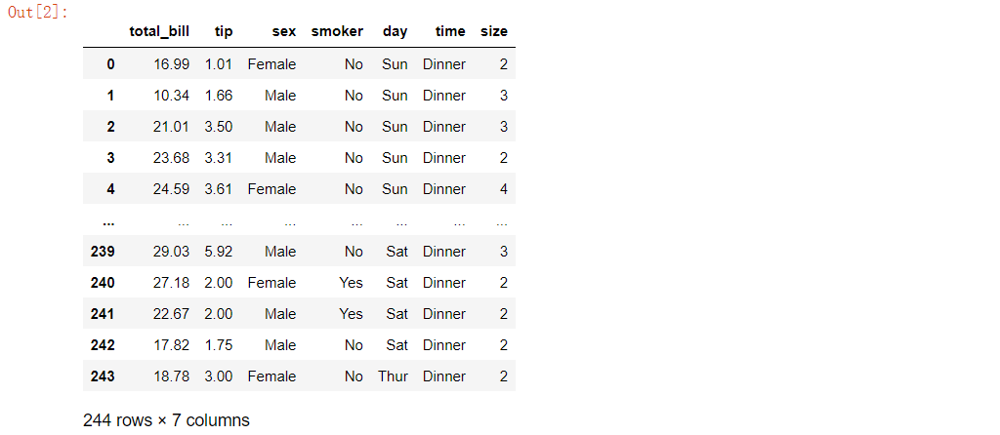
2.1 单变量绘图
直方图 vs 密度图
1）查看客户消费金额 total_bill 的分布情况
# 绘制直方图
sns.histplot(tips, x='total_bill')
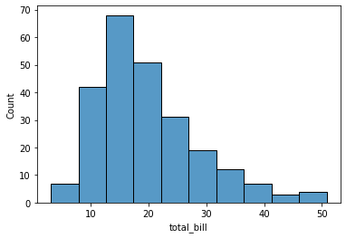
# 绘制密度图
sns.kdeplot(tips['total_bill'])
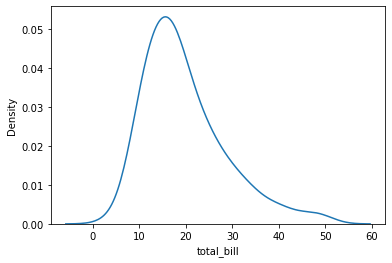
# 绘制直方图+密度曲线
sns.histplot(tips, x='total_bill', bins=10, kde=True)
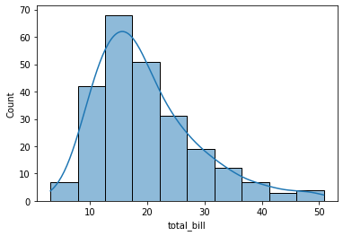
箱线图：
# 绘制箱线图
sns.boxplot(y='total_bill', data=tips)
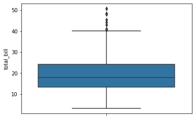
小提琴图：
# 绘制小提琴图
sns.violinplot(y='total_bill', data=tips)
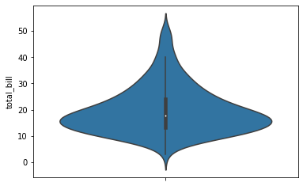
条形图：
1）按照 day(周几) 统计每天的消费数量
# 按照 day(周几) 统计每天的消费数量
result = tips['day'].value_counts()
# 绘制条形图
sns.barplot(x=result.index, y=result.values)
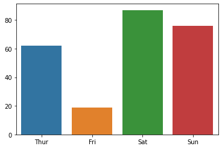
# 绘制条形图(计数图)
sns.countplot(x='day', data=tips)
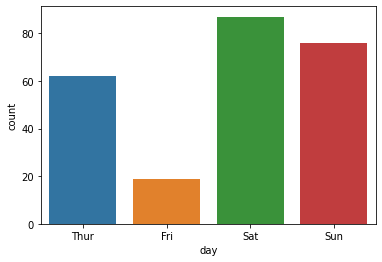
饼图：
注：seaborn 没有提供绘制饼图的方法，可以使用 matplotlib 或 pandas 的方法绘制饼图。
2.3.2 双变量绘图
散点图
1）查看消费数据中消费tip随着消费金额total_bill的变化情况
# 绘制散点图
sns.scatterplot(x='total_bill', y='tip', data=tips)
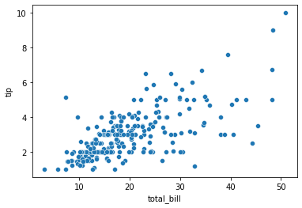
蜂巢图：
# 绘制蜂巢图
sns.jointplot(x='total_bill', y='tip', data=tips, kind='hex')
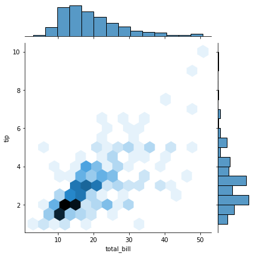
条形图：
1）按 day(周几) 统计每餐消费的平均值并绘图
# 按 day(周几) 统计每餐消费的平均值
result = tips.groupby('day').total_bill.mean()
# 绘制条形图
sns.barplot(x=result.index, y=result.values)
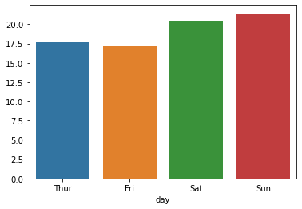
# 绘制条形图
sns.barplot(x='day', y='total_bill', data=tips)
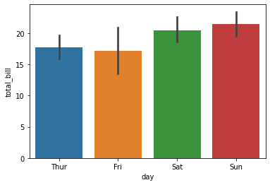
折线图：
# 按 day(周几) 统计每餐消费的平均值
result = tips.groupby('day').total_bill.mean()
# 绘制折线图
sns.lineplot(x=result.index, y=result.values)
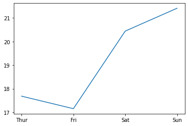
# 绘制折线图
sns.lineplot(x='day', y='total_bill', data=tips)
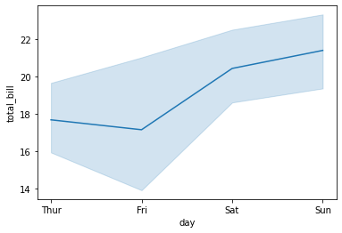
2.3.3 多变量绘图
散点图：
1）查看不同性别的消费客户中，消费 tip 随着消费金额 total_bill 的变化情况
# 绘制散点图，同时 hue 指定列对绘制的点进行分类，用不同的颜色表示
sns.scatterplot(x='total_bill', y='tip', data=tips, hue='sex')
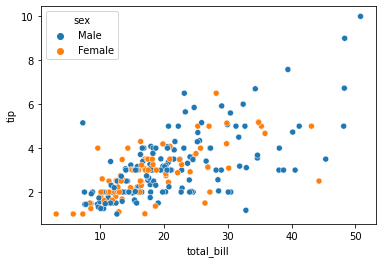
2）查看不同性别的消费客户中，消费金额 total_bill 随着 day 的变化情况
import matplotlib.pyplot as plt
fig = plt.figure(figsize=(8, 7))
axes = fig.subplots(1, 1)
# 绘制折线图
sns.lineplot(x='day', y='total_bill', data=tips, hue='sex', ax=axes)
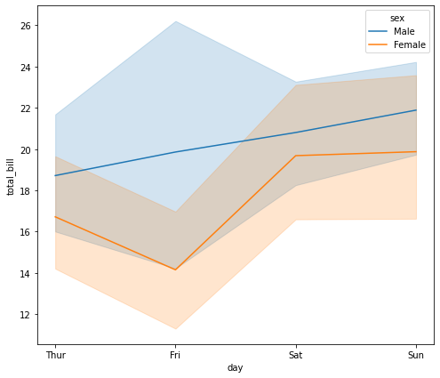
总结
- seaborn 是对 Matplotlib 以及 pandas 的封装，与Series、DataFrame的 API 配合很好
- seaborn的 API 非常简单
- 推荐使用 seaborn 或 pandas 进行绘图，如果需要对图形控制比较精细，可以使用Matplotlib